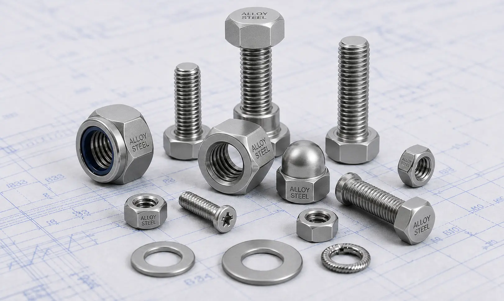

Leading Alloy Steel Fasteners Manufacturer and Supplier in India offering hex bolts, stud bolts, anchor bolts, nuts, washers, and socket head bolts in ASTM A193, B7, B16, L7, and high tensile grades.
Gururaj Infradesigns is a trusted Alloy Steel Fasteners Manufacturer in India, supplying high-strength fastening solutions for demanding industrial, structural, and engineering applications. Alloy steel fasteners are known for their superior mechanical strength, excellent load-bearing capacity, and resistance to high pressure and elevated temperatures, making them suitable for critical service environments.
As a leading Alloy Steel Fasteners Supplier in India, we offer a comprehensive range of bolts, nuts, stud bolts, washers, anchor bolts, and other fastening products manufactured to meet international quality standards. These fasteners are widely used in oil & gas facilities, petrochemical plants, power generation projects, construction, and heavy engineering industries where reliability and performance are essential.

Alloy Steel Fasteners are engineered using alloying elements that enhance strength, toughness, wear resistance, and temperature performance. These fasteners are commonly selected for applications involving high-pressure systems, structural assemblies, industrial equipment, and heavy-duty machinery where conventional fastening materials may not provide the required mechanical properties.
Compared to standard fastening materials, alloy steel fasteners offer improved durability and performance under demanding operating conditions. Industries seeking enhanced strength and long service life often choose alloy steel fasteners for critical applications. For projects requiring economical fastening solutions, customers may also explore Carbon Steel Fasteners manufacturer in India options for general-purpose industrial applications.
| Parameter | Details |
|---|---|
| Product Name | Alloy Steel Fasteners |
| Product Types | Hex Bolts, Stud Bolts, Anchor Bolts, U Bolts, Hex Nuts, Washers, Socket Head Bolts |
| Material Grades | B6, B7, B7M, B8, B8M, B16, 2, 2H, 2HM, GR 6, GR 7, GR 7M, L7, L7M, 8.8, 10.9, 12.9, ASTM A193, ASTM A194, ASTM A320 |
| Standards | ASTM, ASME, DIN, ISO |
| Thread Type | Metric, UNC, UNF, BSW |
| Size Range | M3 to M100 & Custom Sizes |
| Manufacturing Process | Hot Forged, Cold Forged, CNC Machined |
| Surface Finish | Plain, Black, Zinc Plated, Hot Dip Galvanized |
| Certification | Material Test Certificates Available |
ASTM A193 and ASTM A194 fasteners are extensively used in pressure vessels, piping systems, flanges, and high-temperature industrial equipment. These grades are widely specified in petrochemical plants, refineries, and power generation facilities where dependable mechanical performance is required.
B7 and B7M fasteners are among the most commonly used alloy steel grades for bolting applications involving pressure systems and industrial equipment. They offer excellent tensile strength and are widely used in flanged joints, valves, pumps, and process piping systems.
B16 fasteners are designed for elevated-temperature applications and provide excellent strength retention under thermal stress. They are commonly used in power plants, steam systems, and refinery equipment operating at higher temperatures.
L7 and L7M fasteners are engineered for low-temperature service environments where impact toughness is critical. These grades are commonly used in cryogenic systems, cold-weather installations, and specialized industrial equipment.
These high-strength alloy steel fasteners are widely used in structural, automotive, engineering, and heavy machinery applications. Higher property classes provide increased tensile strength and load-bearing capacity for demanding service conditions.
| Grade | Key Advantage | Common Applications |
|---|---|---|
| B7 | High tensile strength | Flanges, Valves, Pressure Systems |
| B7M | Improved ductility | Corrosive Industrial Services |
| B16 | High-temperature performance | Power Plants, Refineries |
| L7 | Low-temperature toughness | Cryogenic Applications |
| L7M | Enhanced impact resistance | Cold Service Equipment |
| ASTM A193 | Pressure vessel bolting | Petrochemical Plants |
| ASTM A194 | Heavy-duty nut applications | Industrial Piping Systems |
| 12.9 | Very high strength | Heavy Engineering & Machinery |
Different alloy steel grades are developed to address specific operating conditions. Selecting the correct grade helps ensure structural integrity, safety, and long-term performance in demanding industrial environments.
| Industrial Requirement | Alloy Steel Advantage |
|---|---|
| High Strength Connections | Provides excellent load-bearing capability for critical assemblies. |
| Elevated Temperature Service | Maintains mechanical properties under thermal stress. |
| Pressure System Reliability | Suitable for piping, flanges, and pressure-containing equipment. |
| Heavy-Duty Engineering | Supports demanding structural and mechanical applications. |
| Long Service Life | Offers durability and resistance to mechanical wear. |
| Critical Industrial Operations | Helps improve reliability in high-performance systems. |
Alloy steel fasteners are often preferred where high strength and durability are more important than corrosion resistance. Their ability to withstand demanding operating conditions makes them a reliable choice for engineering, industrial, and infrastructure projects.
Alloy steel fasteners are extensively used in upstream, midstream, and downstream operations where equipment reliability and structural integrity are critical. Their strength makes them suitable for high-pressure piping and processing systems.
Power plants depend on alloy steel fasteners for boilers, turbines, and steam systems operating under elevated temperatures and demanding mechanical conditions. These fasteners help ensure long-term operational reliability.
Petrochemical facilities use alloy steel fasteners in processing units, pressure vessels, and pipeline systems where high mechanical strength is essential for safe and efficient operation.
From industrial machinery to fabrication equipment, alloy steel fasteners provide the strength and durability required for demanding manufacturing and engineering applications.
Large-scale infrastructure projects and industrial structures utilize alloy steel fasteners for their load-bearing capabilities, reliability, and ability to perform under challenging operating conditions.
Gururaj Infradesigns is a trusted Alloy Steel Fasteners Stockist in India, maintaining a ready inventory of high-strength fasteners in various grades, sizes, and specifications to support urgent project requirements and industrial procurement needs. Our stock range includes hex bolts, stud bolts, anchor bolts, U bolts, hex nuts, washers, and socket head bolts suitable for demanding engineering and industrial applications.
As a reliable Alloy Steel Fasteners Supplier in India, we serve engineering companies, EPC contractors, fabricators, and industrial buyers with consistent quality, prompt delivery, and dependable supply support for critical projects.
At Gururaj Infradesigns, quality is an integral part of our manufacturing and supply process. Our alloy steel fasteners are produced using quality-tested materials and are inspected for dimensional accuracy, thread quality, and overall performance to ensure dependable service in industrial applications.
As an ISO Certified Company, we are committed to maintaining consistent quality standards and delivering reliable fastening solutions that meet the expectations of diverse industries.
The performance of any industrial assembly depends on the quality and reliability of its fastening components. Gururaj Infradesigns supplies alloy steel fasteners engineered to deliver strength, durability, and consistent performance across a wide range of industrial applications. Our commitment to product quality, dependable supply, and customer-focused service helps businesses source fastening solutions with confidence while supporting the long-term success of their projects.